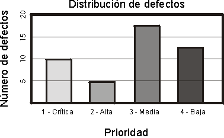
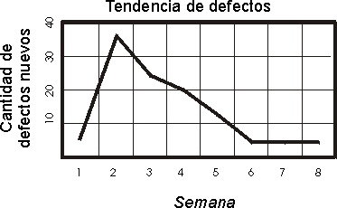
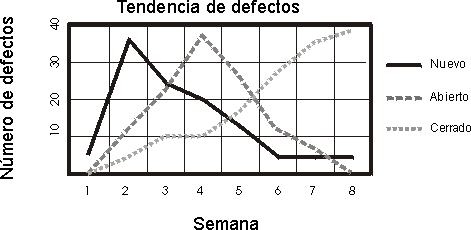
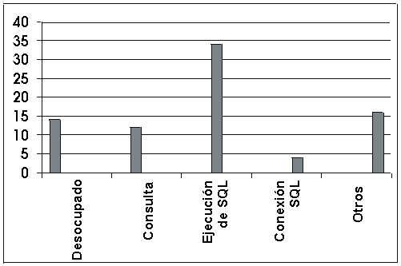
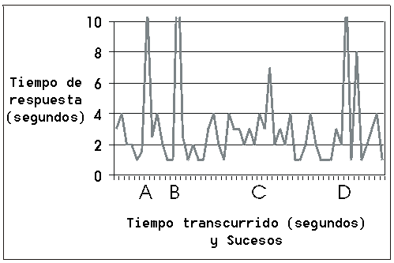
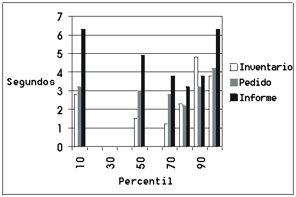

| Concepto: Medidas clave de la prueba |
 |
|
| Elementos relacionados |
|---|
IntroducciónLas medidas clave de una prueba incluyen la cobertura y la calidad. La cobertura de la prueba es la medida de la completitud de la prueba y se basa en la cobertura de la prueba expresada mediante la cobertura de los requisitos de prueba y los guiones de prueba o mediante la cobertura del código ejecutado. La calidad es una medida de fiabilidad, estabilidad y rendimiento del destino de la prueba (sistema o aplicación que se está probando). La calidad se basa en la evaluación de los resultados de la prueba y el análisis de las solicitudes de cambio (defectos) identificados durante la prueba. Medidas de coberturaLa métrica de cobertura responde a la pregunta: "¿Qué porcentaje de la prueba está completo?" Las medidas de cobertura que se utilizan con más frecuencia se basan en la cobertura de los requisitos de software y el código fuente. Básicamente, la cobertura de la prueba es cualquier medida de completitud con respecto a un requisito (basada en requisitos) o los criterios de implementación y diseño de código (basada en código), como la verificación de guiones de uso (basada en requisitos) o la ejecución de todas las líneas de código (basada en código). Cualquier tarea de prueba sistemática se basa en, como mínimo, una estrategia de cobertura de la prueba. La estrategia de cobertura guía el diseño de los guiones de prueba indicando el objetivo general de la prueba. La sentencia de la estrategia de cobertura puede ser tan simple como verificar todo el rendimiento. Una estrategia de cobertura basada en requisitos puede ser suficiente para producir una medida cuantificable de la completitud de la prueba si los requisitos se catalogan completamente. Por ejemplo, si se han identificado todos los requisitos de la prueba de rendimiento, los resultados de la prueba se pueden consultar para obtener medidas; por ejemplo, se ha verificado el 75% de los requisitos de la prueba de rendimiento. Si se aplica la cobertura basada en código, las estrategias de prueba se formulan en términos de qué cantidad del código fuente han ejecutado las pruebas. Este tipo de estrategia de cobertura de la prueba es muy importante para sistemas de seguridad crítica. Las dos medidas se pueden derivar manualmente (utilizando las ecuaciones que se proporcionan en las dos cabeceras siguientes) o se pueden calcular con las herramientas de automatización de pruebas. Cobertura de la prueba basada en requisitosLa cobertura de la prueba basada en requisitos, medida varias veces durante el ciclo vital de la prueba, identifica la cobertura de la prueba en un hito del ciclo vital de pruebas, como la cobertura de la prueba satisfactoria, ejecutada, implementada y planificada.
Si convertimos las proporciones anteriores en porcentajes, se admite la siguiente sentencia de cobertura de la prueba basada en requisitos:
Esta sentencia significativa de la cobertura de la prueba se puede comparar con los criterios de satisfacción definidos. Si no se han cumplido los criterios, la sentencia proporciona una base para predecir la cantidad de esfuerzo de prueba que resta. Cobertura de la prueba basada en códigoLa cobertura de la prueba basada en código mide la cantidad de código que se ejecutó durante la prueba, en comparación con la cantidad de código que queda por ejecutar. La cobertura de código puede basarse en flujos de control (sentencia, ramificación o vías de acceso) o flujos de datos.
La cobertura de la prueba basada en código se calcula con la siguiente ecuación:
Si se convierte esta proporción en un porcentaje, se admite la siguiente sentencia de cobertura de la prueba basada en código:
Esta sentencia significativa de la cobertura de la prueba se puede comparar con los criterios de satisfacción definidos. Si no se han cumplido los criterios, la sentencia proporciona una base para predecir la cantidad de esfuerzo de prueba que resta. Medida de la calidad percibidaAunque la evaluación de la cobertura de la prueba proporciona una medida del grado de completitud del esfuerzo de prueba, la evaluación de los defectos descubiertos durante la prueba proporciona la mejor indicación de la calidad del software tal como se ha experimentado. Esta percepción de calidad se puede utilizar para razonar sobre la calidad general del sistema de software en su conjunto. La calidad del software percibida es una medida del grado en que el software cumple los requisitos que se le imponen; por lo tanto, en este contexto, los defectos se consideran como un tipo de solicitud de cambio en el que el destino de la prueba no cumplió los requisitos de software. La evaluación de defectos puede basarse en métodos que van desde simples recuentos de defectos hasta un riguroso modelado estadístico. La evaluación rigurosa utiliza conjeturas sobre la velocidad de descubrimiento o llegada de defectos durante el proceso de prueba. Un modelo común presupone que la velocidad está de acuerdo con la distribución de Poisson. Los datos reales sobre la velocidad de los defectos se ajustan al modelo. La evaluación resultante calcula la fiabilidad actual del software y predice cómo aumentará la fiabilidad si continúan la eliminación de defectos y las pruebas. Esta evaluación se describe como modelado del crecimiento de la fiabilidad del software y es un área de estudio activo. Debido a la falta de soporte de herramientas para este tipo de evaluación, es recomendable equilibrar cuidadosamente el coste de utilizar este enfoque con los beneficios obtenidos. El análisis de defectos incluye el análisis de la distribución de defectos a los valores de uno o varios de los atributos asociados a un defecto. El análisis de defectos proporciona una indicación de la fiabilidad del software. En el análisis de defectos, normalmente se analizan cuatro atributos de defectos principales:
Los recuentos de defectos se pueden notificar como una función de tiempo, creando un informe o diagrama de la tendencia
de defectos. También se pueden notificar en un informe de densidad de defectos como una función de uno o varios
atributos de defectos, como la gravedad o el estado. Estos tipos de análisis proporcionan una perspectiva de las
tendencias o de la distribución de defectos que revela la fiabilidad del software. En un análisis de este tipo sólo se incluyen defectos confirmados. No todos los defectos notificados denotan un error real; algunos son solicitudes de mejora fuera del ámbito del proyecto o describen un defecto que ya se ha notificado. Sin embargo, merece la pena analizar por qué se notifican muchos defectos que son duplicados o defectos no confirmados. Informes de defectosRational Unified Process recomienda la evaluación de defectos basada en varias categorías de informes, como se muestra a continuación:
Muchos de estos informes son valiosos para evaluar la calidad del software. Son especialmente útiles cuando se analizan junto con los resultados de la prueba y los informes de progreso que muestran los resultados de las pruebas que se realizaron en una serie de iteraciones y ciclos de prueba para la aplicación que se está probando. Los criterios de prueba habituales incluyen una sentencia sobre el número tolerable de defectos abiertos en determinadas categorías, como la clase de gravedad, que se comprueba fácilmente con una evaluación de la distribución de defectos. Al clasificar y agrupar esta distribución según motivadores de prueba, la evaluación se puede centrar en áreas de preocupación importantes. Normalmente, es necesario el soporte de herramientas para crear eficazmente informes de este tipo. Informes de la densidad de defectosPrioridad en oposición a estado del defectoProporcione a cada defecto una prioridad. Normalmente, resulta práctico y es suficiente tener cuatro niveles de prioridad, por ejemplo:
Nota: los criterios para una prueba satisfactoria se pueden expresar en términos del aspecto que debería tener la distribución de defectos en estos niveles de prioridad. Por ejemplo, los criterios de prueba satisfactorios pueden ser "están abiertos cero defectos de Prioridad 1 y menos de cinco defectos de Prioridad 2". Debe generarse un diagrama de distribución de defectos, como el siguiente.  Está claro que no se han satisfecho los criterios. Este diagrama debe incluir un filtro para mostrar únicamente los defectos abiertos, como requieren los criterios de la prueba. Gravedad en oposición a estado del defectoLos informes de gravedad de defectos muestran cuántos defectos hay en cada clase de gravedad; por ejemplo, error muy grave, función principal no realizada, error leve. Ubicación es oposición a estado del defecto en el modelo de implementaciónLos informes de origen de defectos muestran la distribución de los defectos en los elementos del modelo de implementación. Informes de antigüedad de defectosEl análisis de la antigüedad de defectos proporciona información fiable sobre la eficacia de las pruebas y las tareas de eliminación de defectos. Por ejemplo, si la mayoría de los defectos antiguos, sin resolver, se encuentran en estado de validación pendiente, probablemente significa que no se han aplicado los suficientes recursos al esfuerzo de repetir la prueba. Informes de tendencia de defectosLos informes de tendencia de defectos identifican los índices de defectos y proporcionan una vista especialmente buena del estado de la prueba. Las tendencias de defectos siguen un patrón bastante previsible en un ciclo de prueba. Al principio del ciclo, los índices de defectos aumentan con rapidez, hasta que alcanzan un pico y empiezan a disminuir a una velocidad menor a lo largo del tiempo.  Para buscar problemas, la planificación del proyecto se puede revisar teniendo en cuenta esta tendencia. Por ejemplo, si los índices de defectos siguen aumentando en la tercera semana de un ciclo de prueba de cuatro semanas, no cabe duda de que el proyecto no está siguiendo la planificación. Este sencillo análisis de tendencias presupone que los defectos se están arreglando puntualmente y que los arreglos se están probando en compilaciones posteriores, de modo que la velocidad de cerrar defectos debería tener el mismo perfil que la velocidad de encontrar defectos. Cuando esto no sucede, indica que hay un problema con el proceso de resolución de defectos; los recursos de arreglo de defectos o los recursos para repetir la prueba y validar los arreglos podrían ser inapropiados.  La tendencia que se refleja en este informe muestra que se han descubierto defectos nuevos y se han abierto rápidamente al principio del proyecto, y que disminuyen con el tiempo. La tendencia para abrir defectos es similar a la tendencia para defectos nuevos, aunque va un poco por detrás. La tendencia para cerrar defectos aumenta con el tiempo, a medida que se arreglan y verifican los efectos abiertos. Estas tendencias representan un esfuerzo satisfactorio. Si sus tendencias se desvían dramáticamente de estas, pueden indicar un problema e identificar cuándo es necesario aplicar recursos adicionales a áreas específicas de desarrollo o prueba. Cuando se combinan con las medidas de cobertura de la prueba, el análisis de defectos proporciona una evaluación excelente para basar los criterios de terminación. Medidas de rendimientoSe utilizan varias medidas para evaluar los comportamientos de rendimiento del destino de la prueba y para centrarse en la captura de datos relacionados con los comportamientos, como el tiempo de respuesta, los perfiles de tiempo, el flujo de ejecución, la fiabilidad operativa y los límites. Principalmente, estas medidas se evalúan en la tarea Evaluar prueba; sin embargo, hay medidas de rendimiento que se utilizan durante la tarea Ejecutar prueba para evaluar el estado y el progreso de la prueba. Las principales medidas de rendimiento son:
Supervisión dinámicaLa supervisión dinámica proporciona visualización e informes en tiempo real durante la ejecución de la prueba, normalmente en formato de histograma o gráfico. El informe supervisa o evalúa la ejecución de pruebas de rendimiento mediante la visualización del estado actual y el progreso de los scripts de prueba.  Por ejemplo, en el histograma precedente, hay 80 scripts de prueba ejecutando el mismo guión de uso. En este gráfico, hay 14 scripts de prueba en estado Desocupado, 12 en estado Consulta, 34 en estado Ejecución de SQL, 4 en estado de Conexión SQL y 16 en estado Otro. A medida que progresa la prueba, verá cómo cambia el número de scripts en cada estado. La salida visualizada será típica de la ejecución de una prueba que progresa con normalidad y se encuentra en medio de la ejecución. Sin embargo, si los scripts de prueba permanecen en un estado o no muestran cambios durante la ejecución de la prueba, podría ser una indicación de que existe un problema en la ejecución de la prueba, o la necesidad de implementar o evaluar otras medidas de rendimiento. Informes de rendimiento y tiempo de respuestaLos informes de rendimiento y tiempo de respuesta, como su nombre indica, miden y calculan los comportamientos de rendimiento relacionados con el tiempo y el rendimiento (número de transacciones procesadas). Normalmente, estos informes se muestran como un gráfico con tiempo de respuesta (o número de transacciones) en el eje "y" y sucesos en el eje "x".  Normalmente, es recomendable calcular y visualizar la información estadística, como la desviación media y estándar de los valores de datos, además de mostrar los comportamientos de rendimiento real. Informes de percentilLos informes de percentil proporcionan otro cálculo estadístico de rendimiento mediante la muestra de valores de percentil de la población para los tipos de datos recopilados.  Informes de comparaciónEs importante comparar los resultados de la ejecución de una prueba de rendimiento con los de otra, para poder evaluar el impacto de los cambios realizados entre las ejecuciones de la prueba en los comportamientos de rendimiento. Utilice los informes de comparación para visualizar la diferencia entre dos conjuntos de datos (cada uno representa una ejecución de prueba diferente) o tendencias entre muchas ejecuciones de prueba. Informes de rastreo y perfilCuando los comportamientos de rendimiento son inaceptables o la supervisión de rendimiento indica posibles cuellos de botella (por ejemplo, scripts de prueba que permanecen en un estado dado durante periodos de tiempo muy largos), el informe de rastreo podría ser el informe más valioso. Los informes de rastreo y perfil muestran información de bajo nivel. Esta información incluye los mensajes entre el actor y el destino de la prueba, el flujo de ejecución, el acceso de datos y las llamadas al sistema y a funciones. |
© Copyright IBM Corp. 1987, 2006. Reservados todos los derechos. |